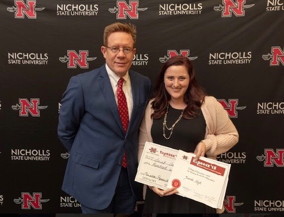

This year, we, Ann-Marie Castille (my better half over in the Computer Information Systems Department here at NSU and fellow I/O psychologist) and I founded the People Analytics Lab @ NSU. It is a social science lab that gives students opportunities to learn how to conduct research as it relates to organizational life. Thus far, there have been a few positive outcomes. One that I am particularly proud of involves a few students in our lab (Sarah Avet, Kathryn Daigle, and Bernard Wazeman). They pre-registered the analysis for replicating one of my studies. The study investigated a population that many researchers will be familiar with: the occupational diversity of the labor force that is accessible via Amazon’s Mechanical Turk (MTurk).
Organizational researchers have been sampling from MTurk at an increasing rate over the past 10 or so years. This population allows us to gather data on a large sample of workforce so long as they are on MTurk. In other words, we can study the workforce indirectly. Even though a lot of people are surely on MTurk, we have suspected that the population might not represent the broader U.S. workforce. Our initial analyses using data obtained in 2015 suggested that the demographics of MTurk are skewed toward white-collar professions, which is not too surprising (it isn’t like we’re sampling from “Farmer’s Only.com”). I encouraged the students to pre-register a replication of this initial work. The data came from a 2017 investigation that involved MTurk participants and so all they needed to do was analyze the data using code drafted in 2015. Importantly, I wanted them to pre-register their analyses. A few months after pre-registering their plan, they successfully replicated our previous finding, presented a poster at a conference held here at Nicholls which summarized their findings, and won an award (and $100!).

Even though the study isn’t earth-shattering and does fit with common sense, I’m inclined to view the exercise an example of how we can come to see the world a little more clearly. Simply speaking, what we did was the scientific process as most of us understand it:
Write down a hypothesis or a best guess about the state of the world,
Test your hypothesis by gathering data, and
Update your beliefs based on the data.
Depending on your level of exposure to academic research, it might surprise you to learn that science is not always conducted this way for a variety of reasons.